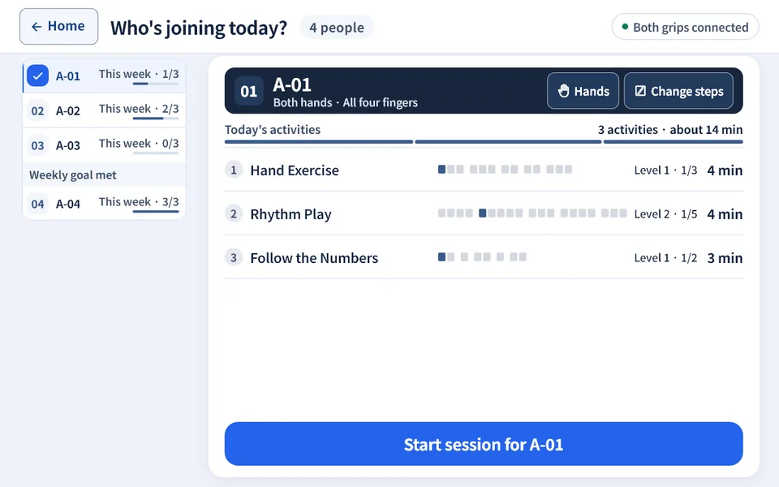
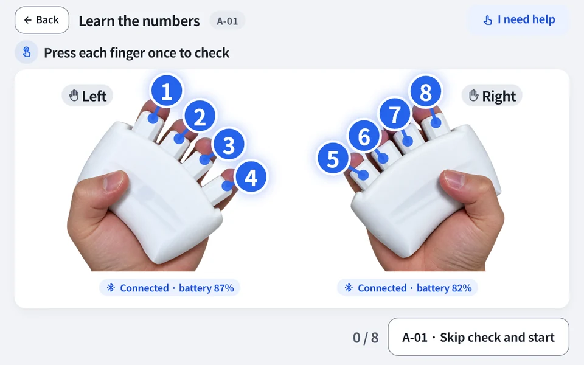
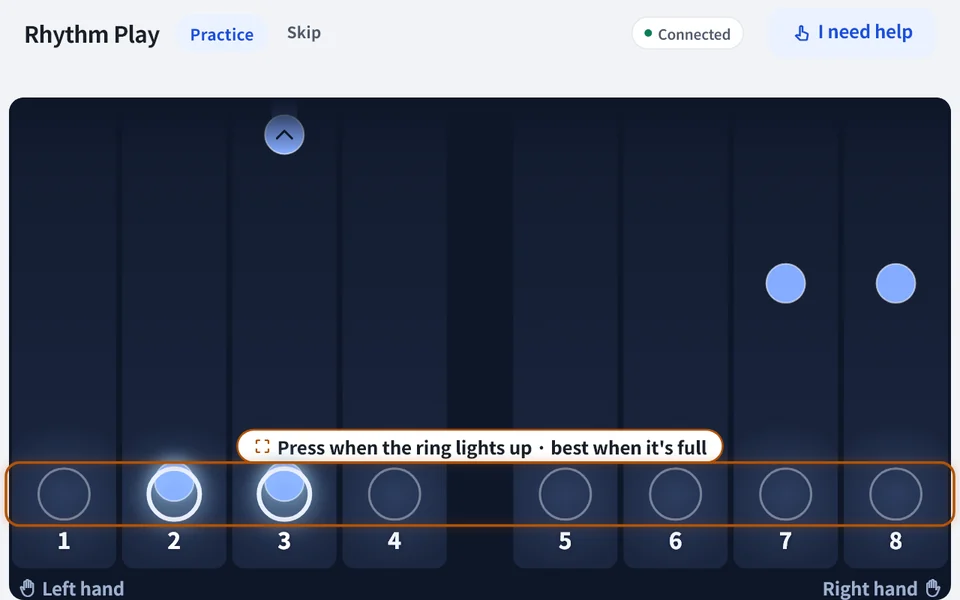
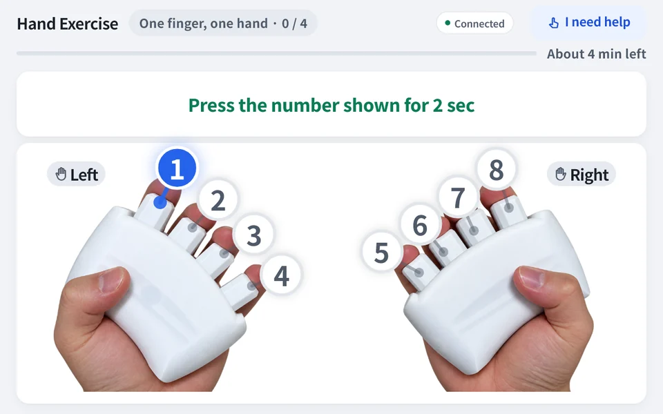

Guided hand exercise for centers
For staff running programs in community centers, senior centers, day or overnight care centers and residential care facilities.
Planned launch: first half of 2027
Use a pair of grips with an Android tablet. Staff can review training records in a browser.

How it runs
Guide a session from one tablet
The app gives the cues while a staff member guides the session.
A session at the center
26-second walkthroughChoose a scene
Read the session steps

Choose a participant
Select a participant on the tablet to bring up today’s plan and the level for each activity. A typical example is three activities lasting about 14 minutes in total.

Check the device
Press each of the eight levers in turn. Check that the matching finger and number light up on the tablet.

Explanation and practice
Participants hear the instructions and try a practice round before they start.

Activities and results
There is a short rest between activities; at the end, the app shows what was done today and saves the records.
Records
Activity records by finger
Use the staff dashboard to see who is training today and open each participant’s record.
Inside the staff dashboard
20-second walkthroughThe staff dashboard is currently in Korean. The demonstration uses English renderings of the original screens.
The tablet app is shown in English. The staff dashboard is currently available only in Korean. Its screens here are English renderings of development screens with fictional data and participant IDs. Product specifications, screens and available languages may change.
Performance record noticeThese values are records of how training was done. They are not a diagnosis, and medical decisions belong to a medical professional.
View the first page of the family report
Older adults and families receive only the first page of the report, which lists what was done.
This period at a glance
Visits, completed sessions and total scheduled time for completed activities
By week
Sessions completed each week
Activities done
How many times each activity was done
Training days
Marked on a calendar
Adoption
Adoption guide
We work with each center to choose a setup that fits its program and the features available.
Inquiry and consultation
Tell us how many people will take part and how your center runs its program. We’ll discuss the setup with you.
Setup discussion
We discuss the number of grips and tablets, how it will run and the features provided.
Installation and on-site training
On installation day, staff receive a 30-minute training session.
Running the program
Staff guide each session on the tablet and review the records in the staff dashboard.
Materials for your center
- User manuals — two volumes, for the tablet (staff) and the admin web
- On-site training guide — for the 30-minute session on installation day
- One-page start guide — the admin web address and what to do on day one
- Participant consent form template — a form to collect from older adults (or guardians)
- ID number ledger template — a spreadsheet to match ID numbers with participants
FAQ
Frequently asked questions
What do I need?
You need a left and right grip, an Android tablet paired with the grips, and a web browser for the staff dashboard.
If the internet drops for a moment, the tablet stores the records and sends them automatically once it is connected again.
Is the older adult's name saved in the records?
Participants are registered not by name but by an ID number set by the center (for example, A-01). Only the number is stored on the tablet and the server. We provide a spreadsheet template so that the table matching numbers to older adults is kept on just one of the center's office PCs.
Can a participant use one hand or leave out a finger?
For each older adult you can set "uses one hand" and "fingers to leave out of training". The setting applies only to that person and does not carry over to the next.
What if it is too hard or too easy?
At first, each activity starts at its easiest step. After that, staff can move the level and speed of each activity up or down one step at a time. The admin web tells you who might be ready for a higher or lower level based on performance records; staff decide.
What if sound or vibration is uncomfortable?
In the staff settings you can lower or turn off the sound volume, the voice guidance and the vibration on pressing.
What if an older adult presses the screen by mistake?
During training the only on-screen button an older adult can press is "I need help". Staff end the session and change settings.
What happens to the records of someone who withdraws consent?
A center administrator can delete all of that person's records in the admin web. Deleted records cannot be restored. If you need help, contact DAMUN.
Is Rehaptic a medical device?
Rehaptic is a finger-exercise training product. It has not been approved or certified as a medical device and is not intended to diagnose, treat or prevent disease. The values in the admin web are records of how training was done; medical decisions belong to a medical professional.
How much does it cost?
We arrange it to fit the size and setup of your organization. Please contact info@damun.asia.
Considering adoption?
Get in touch about using Rehaptic at your center or partnering with DAMUN.